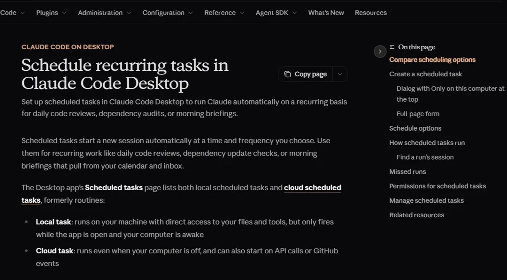
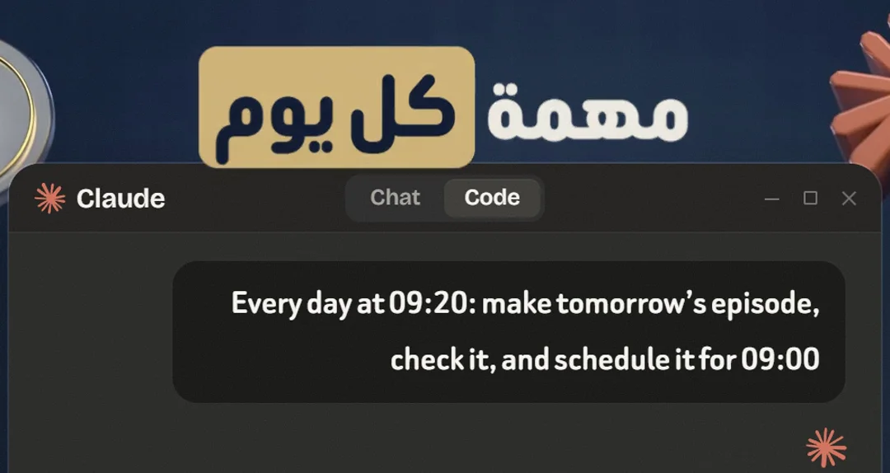
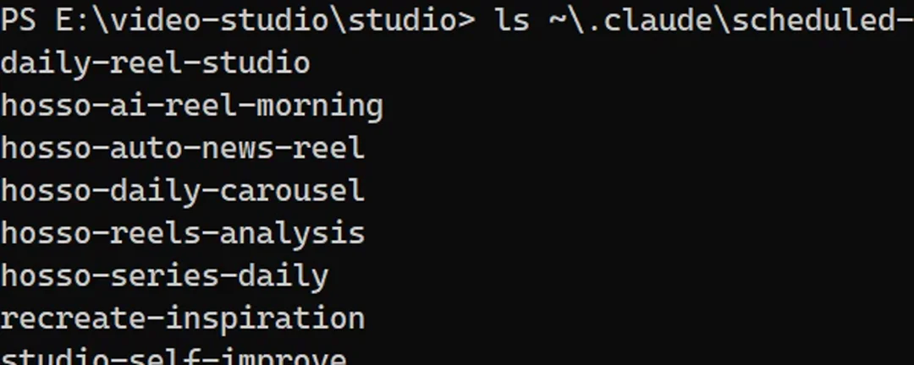

شغــلكل يوم لوحـــده
خطوات الحلقة 24 من «بتعلّم Claude قدامكم»: إزاي تعمل Scheduled task في Claude Code على الديسكتوب، تشتغل كل يوم في الميعاد اللي تحدده وتعمل الشغل لوحدها.


- 01
يعني إيه Scheduled task؟
مهمة بتفتح جلسة Claude جديدة لوحدها في ميعاد وتكرار إنت بتختاره. المحلية بتشتغل على جهازك وبتشوف ملفاتك، بس لازم البرنامج يكون مفتوح والجهاز صاحي.
صفحة Scheduled tasks الرسمية ↗
صفحة Scheduled tasks الرسمية من Anthropic، دي اللي الخطوات جاية منها - 02
افتح Scheduled
في تطبيق Claude على الديسكتوب، ادخل تبويب Code، ودوس Scheduled في الجنب، وبعدها دوس زرار New task اللي فوق.
- 03
اكتب الاسم والتعليمات
اسم للمهمة، وتحته اكتب اللي عايز Claude يعمله كل مرة، بالظبط زي ما بتكلّمه.

التعليمات اللي كتبتها لمهمة السلسلة: تعمل حلقة بكرة وتفحصها وتجدولها - 04
اختار الفولدر والميعاد
من Advanced settings شغّل Only on this computer واختار الفولدر. وبعدين من Trigger اختار Daily والساعة.
- 05
دوس Create
أول مرة دوس Run now واتفرّج، ولو طلب إذن لأداة اختار Always allow، عشان المرات الجاية تمشي من غير ما تقف.

المهام اليومية اللي شغالة على جهازي فعلًا، كل واحدة فولدر لوحدها - 06
أو اطلبها بالكلام
تقدر تقول لـ Claude في أي جلسة يعمل المهمة بنفسه:
Set up a daily task that runs every morning at 9am in this folder and writes me a short summary of yesterday's files
نصايح صغيرة
- المهمة المحلية بتشتغل بس لو البرنامج مفتوح والجهاز صاحي. لو الجهاز نام، بتشتغل مرة واحدة أول ما يصحى.
- تعليمات المهمة بتتحفظ في ملف SKILL.md تقدر تعدّله، والتعديل بيمشي من المرة الجاية.
- ابدأ بمهمة صغيرة، وزوّد عليها لما تتأكد إنها شغالة.
عايز حد يعملهولك؟
مش فاضي تتعلم وتعمل بنفسك؟ أنا بعمل ريلز لبراندك بنفس الطريقة اللي بشرحها هنا.